rm(list = ls())
gc() used (Mb) gc trigger (Mb) max used (Mb)
Ncells 607343 32.5 1304828 69.7 702068 37.5
Vcells 1120398 8.6 8388608 64.0 1928153 14.8On commence par nettoyer notre environnement:
rm(list = ls())
gc() used (Mb) gc trigger (Mb) max used (Mb)
Ncells 607343 32.5 1304828 69.7 702068 37.5
Vcells 1120398 8.6 8388608 64.0 1928153 14.8Créer le vecteur qui contient tous les multiples de 3 entre 1 et 50.
Pour cela on utilise la fonction seq() pour créer notre vecteur.
On affiche ensuite notre vecteur avec la fonction print().
notre_vec <- seq(from = 3, to = 50, by = 3)
print(notre_vec) [1] 3 6 9 12 15 18 21 24 27 30 33 36 39 42 45 48Créer la fonction “tronque()” qui prend pour argument un nombre x et un vecteur vec et qui change tous les éléments du vecteur vec supérieur à x en x.
On écrit la définition de la fonction:
tronque <- function(x,vec){
# On filtre vec sur les éléments supérieur à x, et on leur attribue x
vec[vec>x] <- x
return(vec)
}On teste la fonction avec le vecteur de l’exercice 1, que l’on tronque à 30:
print(tronque(30, notre_vec)) [1] 3 6 9 12 15 18 21 24 27 30 30 30 30 30 30 30On est content on a bien tronqué notre vecteur.
Créer la fonction “maxi()” qui a un vecteur numérique associe son élément maximum.
maxi <- function(vec){
# on initialise le maximum avec le premier élément
max <- vec[1]
for (i in 2:length(vec)){ # on parcoure tous les éléments
if (vec[i] > max){ # on compare avec notre max actuel
max <- vec[i] # condition vérifiée alors on atrribue notre nouveau max
}
}
return(max)
}On teste notre focntion sur le vecteur du premier exo:
print(maxi(notre_vec)) # on affiche le résultat[1] 48Créer un dataframe de 10 étudiants avec leur nom, prénom, âge, sexe, entreprise. Puis maniopulation sur le jeu de données.
On commence par créer notre dataframe:
etudiants <- data.frame(
nom = c("Dupont", "Jalibert", "Penaud", "Cros", "Jelonch",
"Meafou", "Marchand", "Depoortere", "Flament", "Fickou"),
prenom = c("Antoine", "Mathieu", "Damian", "François", "Anthony",
"Emmanuel", "Julien", "Nicolas", "Thibault", "Gael"),
age = c(18, 20, 19, 23, 22, 25, 17, 23, 24, 21),
sexe = c("F", "M", "F", "M", "F", "M", "F", "M", "F", "M"),
entreprise = c("Google", "Microsoft", "Amazon", "Apple", "Meta",
"IBM", "Oracle", "SAP", "Salesforce", "Facebook")
)Notre DF est créée, on peut l’observer:
print(etudiants) nom prenom age sexe entreprise
1 Dupont Antoine 18 F Google
2 Jalibert Mathieu 20 M Microsoft
3 Penaud Damian 19 F Amazon
4 Cros François 23 M Apple
5 Jelonch Anthony 22 F Meta
6 Meafou Emmanuel 25 M IBM
7 Marchand Julien 17 F Oracle
8 Depoortere Nicolas 23 M SAP
9 Flament Thibault 24 F Salesforce
10 Fickou Gael 21 M FacebookOn calcule l’âge moyen de notre groupe d’étudiant:
print(mean(etudiants$age))[1] 21.2On regarde la proportion de femme dans notre groupe d’étudiant:
nb_femme <- sum(etudiants$sexe == "F")
nb_total <- nrow(etudiants)
proportions_femme <- nb_femme / nb_total
print(proportions_femme)[1] 0.5On essaye maintenenat de créer une variable de tranche d’âge:
etudiants$tranche_age <- cut(etudiants$age,
breaks = c(0,19,21,23,30),
labels = c("U19","U21","U23","A"))On regarde si notre nouvelle variable s’est bien intégrée au dataframe:
print(etudiants) nom prenom age sexe entreprise tranche_age
1 Dupont Antoine 18 F Google U19
2 Jalibert Mathieu 20 M Microsoft U21
3 Penaud Damian 19 F Amazon U19
4 Cros François 23 M Apple U23
5 Jelonch Anthony 22 F Meta U23
6 Meafou Emmanuel 25 M IBM A
7 Marchand Julien 17 F Oracle U19
8 Depoortere Nicolas 23 M SAP U23
9 Flament Thibault 24 F Salesforce A
10 Fickou Gael 21 M Facebook U21On va utiliser le package dplyr pour faire des statistiques par tranche d’âge, on commence donc par charger le package:
library(dplyr)On peut maintenant calculer l’âge moyen et la proportion de femmes par tranche d’âge.
etudiants %>%
group_by(tranche_age) %>%
summarise(effectif = n(),
age_moyen = round(mean(age),2),
proportion_femmes = round(mean(sexe == "F"),2)) %>%
arrange(tranche_age)# A tibble: 4 × 4
tranche_age effectif age_moyen proportion_femmes
<fct> <int> <dbl> <dbl>
1 U19 3 18 1
2 U21 2 20.5 0
3 U23 3 22.7 0.33
4 A 2 24.5 0.5 On commence par nettoyer notre environnement:
rm(list = ls())
gc() used (Mb) gc trigger (Mb) max used (Mb)
Ncells 781522 41.8 1304828 69.7 1304828 69.7
Vcells 1445147 11.1 8388608 64.0 2503236 19.1On veut importer PisaFR et comparer avec PisaUS, on considère que nos données se trouvent dans le dossier “Data”:
pisa_fr <- read.table("Data/PisaFR.csv",
header = TRUE,
sep = ";",
dec = ",",
na = " ")
pisa_us <- read.table("Data/PisaUS.csv",
header = TRUE,
sep = ";",
dec = ",",
na = " ")On observe les structures de PisaFR et de PisaUS:
str(pisa_fr)'data.frame': 6308 obs. of 11 variables:
$ X : int 179992 179993 179994 179995 179996 179997 179998 179999 180000 180001 ...
$ COUNT: chr "FRA" "FRA" "FRA" "FRA" ...
$ MATH : num 310 361 454 559 545 ...
$ READ : num 289 435 413 634 587 ...
$ SCIE : num 298 416 433 612 571 ...
$ GLCM : logi NA NA NA NA NA NA ...
$ RCLI : num 309 458 437 647 601 ...
$ RCUN : num 252 419 440 632 591 ...
$ RCER : num 309 410 438 641 611 ...
$ RTSN : num 257 386 434 631 605 ...
$ RTML : num 280 417 440 631 562 ...str(pisa_us)'data.frame': 4838 obs. of 11 variables:
$ X : int 582014 582015 582016 582017 582018 582019 582020 582021 582022 582023 ...
$ COUNT: chr "USA" "USA" "USA" "USA" ...
$ MATH : num 427 429 538 516 451 ...
$ READ : num 434 368 590 594 508 ...
$ SCIE : num 429 433 547 591 497 ...
$ GLCM : logi NA NA NA NA NA NA ...
$ RCLI : num 445 311 575 572 527 ...
$ RCUN : num 432 362 580 593 503 ...
$ RCER : num 406 396 603 593 525 ...
$ RTSN : num 439 379 586 575 487 ...
$ RTML : num 437 394 583 569 487 ...On peut voir que nous avons les mêmes variables. Il y a plus de lignes d’observations dans PisaFR que dans PisaUS. Enfin, on retrouve la même variable GLCM remplie de NA dans les deux dataframes.
On supprime la colonne GLCM, qui est la 6e du dataframe:
pisa_fr<-pisa_fr[,-6] # pour supprimer la sixième colonne
head(pisa_fr) X COUNT MATH READ SCIE RCLI RCUN RCER
179992 179992 FRA 309.5953 288.9840 298.1477 308.9349 251.5719 309.1987
179993 179993 FRA 360.6862 434.9926 415.8937 457.5800 418.5374 410.1336
179994 179994 FRA 453.5479 412.5912 432.8017 436.5805 439.7077 438.4752
179995 179995 FRA 559.4898 633.9166 612.3981 647.2681 631.8412 640.6178
179996 179996 FRA 544.5136 586.8591 571.0675 600.8357 590.8236 611.4404
179997 179997 FRA 560.1331 577.0338 557.4484 628.3089 569.5149 585.1818
RTSN RTML
179992 257.0441 279.8403
179993 386.4993 416.8271
179994 433.5100 440.2152
179995 631.0588 630.5249
179996 604.5138 561.9608
179997 599.8920 582.9154On veut supprimer toutes les observations dont la somme des notes en français (READ) et en maths (MATH) sont inférieure à 1000:
pisa_fr <- pisa_fr[pisa_fr$READ + pisa_fr$MATH >= 1000, ]Ainsi que celles des étudiants dont les notes en sciences (SCIE), sont inférieures à 500:
pisa_fr <- pisa_fr[pisa_fr$SCIE >= 500, ]On effectue un histogramme pour vérifier que notre filtre a bien fonctionné pour la condition des notes en sciences inférieures à 500:
hist(pisa_fr$SCIE,
main = "Distribution des notes en Sciences (SCIE)\nAprès filtrage (>= 500)",
xlab = "Note en Sciences",
ylab = "Fréquence",
xlim = c(400, 900))
On est content on voit qu’il n’y a aucune observations avec une note inférieure à 500.
On souhaite refaire la question précèdente avec les packages dplyr et ggplot2.
Pour cela on commence par re-importer nos données:
pisa_fr <- read.table("Data/PisaFR.csv",
header = TRUE,
sep = ";",
dec = ",",
na = " ")On charge également les packages nécessaires:
library(dplyr)
library(ggplot2)Et maintenant nous pouvons utiliser les packages:
pisa_fr %>%
select(-GLCM) %>%
filter(READ + MATH >= 1000, SCIE >= 500) %>%
ggplot(aes(x = SCIE)) +
geom_histogram() +
labs(
title = "Distribution des notes en Sciences",
x = "Note en Sciences",
y = "Fréquence"
) 
On va fusionner nos deux dataframe:
pisa_new <- rbind(pisa_fr, pisa_us)On souhaite manipuler les données en utilisant les commandes slice, filter, select, relocate, rename, arrange, mutate, groupe_by et le pipe
pisa_new %>%
# renommer pour plus de clarté
rename(Pays = COUNT, Sciences = SCIE, Math = MATH, Lecture = READ) %>%
# créer une nouvelle variable
mutate(Total_Score = Math + Lecture) %>%
# filtrer les observations
filter(Total_Score >= 1000, Sciences >= 500) %>%
# sélectionner et réorganiser les colonnes
select(Sciences, Math, Lecture, Total_Score, Pays) %>%
relocate(Total_Score, .after = Sciences) %>%
# trier par score total décroissant
arrange(desc(Total_Score)) %>%
# grouper et résumer
group_by(Pays) %>%
# garder les 10 meilleurs
slice(1:10)# A tibble: 20 × 5
# Groups: Pays [2]
Sciences Total_Score Math Lecture Pays
<dbl> <dbl> <dbl> <dbl> <chr>
1 751. 1480. 733. 747. FRA
2 750. 1476. 683. 793. FRA
3 682. 1456. 719. 738. FRA
4 723. 1447. 678. 769. FRA
5 693. 1445. 724. 721. FRA
6 696. 1444. 725. 718. FRA
7 674. 1429. 686. 743. FRA
8 707. 1419. 701. 718. FRA
9 685. 1408. 684. 724. FRA
10 645. 1407. 697. 710. FRA
11 795. 1561. 750. 810. USA
12 751. 1481. 709. 772. USA
13 725. 1462. 708. 754. USA
14 683. 1461. 693. 768. USA
15 786. 1450. 683. 767. USA
16 768. 1446. 691. 755. USA
17 725. 1441. 711. 730. USA
18 743. 1437. 706. 732. USA
19 687. 1437. 673. 764. USA
20 694. 1436. 694. 743. USA On supprime tous les objets en mémoire:
rm(list = ls())Et on recharge les données de PisaFR:
# Recharger les données
pisa_fr <- read.table("Data/PisaFR.csv",
header = TRUE, sep = ";", dec = ",", na = " ")
library(tidyverse)Grâce à la librairie dplyr nous allons regarder quelques statistiques clés pour les Maths, la Lecture et les Sciences:
pisa_fr %>%
summarise(
Matières = c("Maths", "Lecture", "Sciences"),
Moyenne = c(mean(MATH, na.rm = TRUE), mean(READ, na.rm = TRUE), mean(SCIE, na.rm = TRUE)),
Mediane = c(median(MATH, na.rm = TRUE), median(READ, na.rm = TRUE), median(SCIE, na.rm = TRUE)),
Ecart_Type = c(sd(MATH, na.rm = TRUE), sd(READ, na.rm = TRUE), sd(SCIE, na.rm = TRUE))
) Matières Moyenne Mediane Ecart_Type
1 Maths 487.0133 495.6069 91.86448
2 Lecture 483.7900 490.1750 102.58829
3 Sciences 485.0131 490.0779 94.70026On remarque que la dispersion est assez proche, les medianes et les écarts-types sont proches.
On décide de faire un boxplot pour chacune de ces matières car on s’intéresse à la dispersion de celles-ci:
boxplot(pisa_fr[, c("MATH", "READ", "SCIE")],
main = "Comparaison de la dispersion des notes",
col = c("red", "blue", "green"),
ylab = "Note")
Cela conforte l’impression que l’on a eu avec le summarise précedent.
Regardons maintenenat la corrélation entre les Maths et les Sciences, est-ce qu’il y a une relation ?
ggplot(pisa_fr, aes(x = MATH, y = SCIE)) +
geom_point() +
labs(title = "Corrélation entre les Maths et les Sciences")
Visuellement on remarque une très forte corrélation positive entre les notes en maths et en sciences.
On commence par nettoyer notre environnement:
rm(list = ls())
gc() used (Mb) gc trigger (Mb) max used (Mb)
Ncells 1543527 82.5 2457220 131.3 2457220 131.3
Vcells 2815053 21.5 8388608 64.0 4891667 37.4On importe les données:
sa_heart <- read.table("data/SAHeart.csv", header = TRUE, sep = ",", dec = ".")On observe les premières lignes de notre dataframe:
head(sa_heart) sbp tobacco ldl adiposity famhist typea obesity alcohol age chd
1 160 12.00 5.73 23.11 Present 49 25.30 97.20 52 Si
2 144 0.01 4.41 28.61 Absent 55 28.87 2.06 63 Si
3 118 0.08 3.48 32.28 Present 52 29.14 3.81 46 No
4 170 7.50 6.41 38.03 Present 51 31.99 24.26 58 Si
5 134 13.60 3.50 27.78 Present 60 25.99 57.34 49 Si
6 132 6.20 6.47 36.21 Present 62 30.77 14.14 45 NoAinsi que la structure du jeu de données:
str(sa_heart)'data.frame': 462 obs. of 10 variables:
$ sbp : int 160 144 118 170 134 132 142 114 114 132 ...
$ tobacco : num 12 0.01 0.08 7.5 13.6 6.2 4.05 4.08 0 0 ...
$ ldl : num 5.73 4.41 3.48 6.41 3.5 6.47 3.38 4.59 3.83 5.8 ...
$ adiposity: num 23.1 28.6 32.3 38 27.8 ...
$ famhist : chr "Present" "Absent" "Present" "Present" ...
$ typea : int 49 55 52 51 60 62 59 62 49 69 ...
$ obesity : num 25.3 28.9 29.1 32 26 ...
$ alcohol : num 97.2 2.06 3.81 24.26 57.34 ...
$ age : int 52 63 46 58 49 45 38 58 29 53 ...
$ chd : chr "Si" "Si" "No" "Si" ...Dans un premier temps nous allons conserver seulement les variables quantitatives:
sa_heart_quant <- sa_heart %>%
select(-famhist, -chd)Nous allons transformer les données afin d’effectuer une ACP:
sa_heart_cr <- scale(sa_heart_quant, center = TRUE, scale = TRUE)On va utiliser les packages factoextra et FactoMineR pour réaliser l’ACP.
On charge nos librairies:
library(factoextra)
library(FactoMineR)On réalise l’ACP sur nos données centrées réduites:
res.pca <- PCA(sa_heart_cr, graph = FALSE)On peut à présent représenter le nuage des individus sur plan Axe1 - Axe2:
# Nuage des individus
fviz_pca_ind(res.pca,
geom = "point") 
On peut également regarder le nuage des variables:
fviz_pca_var(res.pca, col.var = "black")
Cet axe est celui qui explique la plus grande part de la variance de nos données.
On observe que les variables adiposity, obesity, age et sbp pointent fortement vers la droite de l’axe.
Cet axe apporte une information complémentaire décorrélée du premier.
Les variables alcohol et tobacco pointent vers le haut, tandis que typea pointe vers le bas.
D’après nos sorties, on a: - l’Axe 1 explique 35,1% de la variance totale des données - l’Axe 2 explique 15% de la variance - à eux deux, ces axes captent 50,1% de l’info
On veut colorer les points dans le nuage des individus en fonction des deux variables qualitatives.
On refait donc notre nuage des individus, en fonction de la présence de maladie cardiaque chez l’individu.
fviz_pca_ind(res.pca,
geom = "point",
col.ind = as.factor(sa_heart$chd), # On transforme en facteur pour avoir des couleurs distinctes
palette = c("blue", "red"), # Bleu pour sain (0), Rouge pour malade (1)
legend.title = "Maladie (chd)")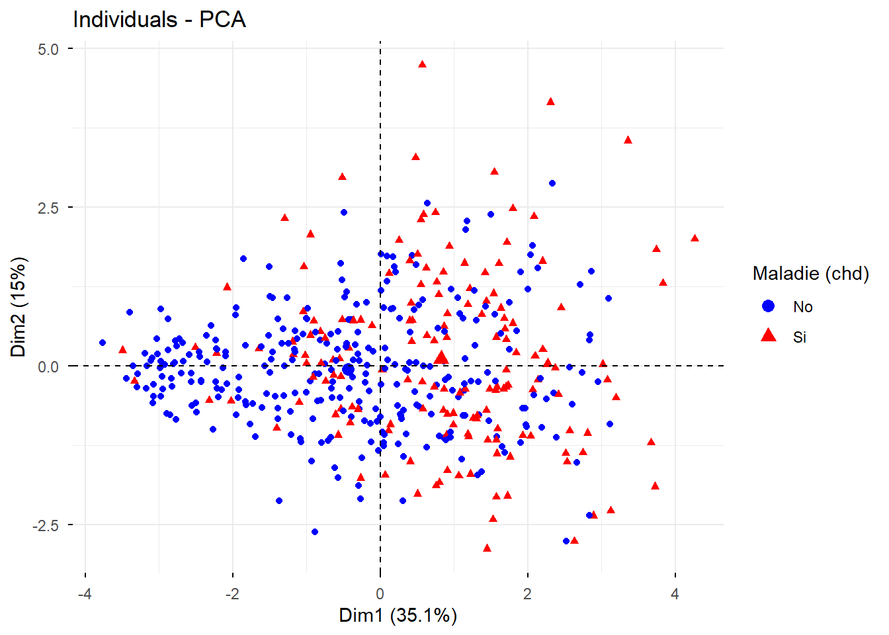
Par rapport à l’axe 1, on remarque que les individus malades ont une valeur plus élevés.
Ils ont donc des valeurs plus élevés sur les variables fortement représentées par cette axe (adiposity, obesity, age et sbp)
On refait donc notre nuage des individus, en fonction de la présence d’antécédents familiaux chez l’individu
fviz_pca_ind(res.pca,
geom = "point",
col.ind = as.factor(sa_heart$famhist), # On transforme en facteur pour avoir des couleurs distinctes
palette = c("blue", "red"), # Bleu pour sain (0), Rouge pour malade (1)
legend.title = "Antécédents (famhist)")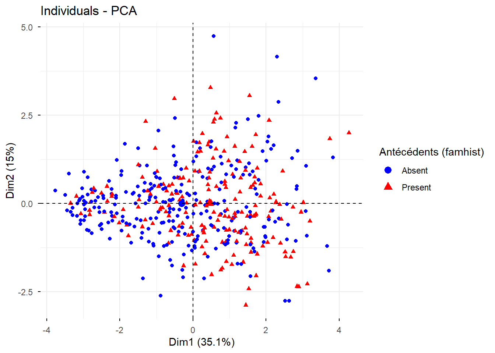
On retrouve une disparité similaire à la variable chd.
Pour réaliser l’algo des k-means on reprend les données centrées et réduites.
On se fait un vecteur de stockage des inertie en fonciton du nb de cluster k.
inertie_vec <- rep(0, times = 10)On lance ensuite l’algo avec k allant de 1 à 10 clusters:
for (k in 1:10) {
# on utilise nstart=20 pour stabiliser les résultats
km <- kmeans(sa_heart_cr, centers = k, nstart = 5)
inertie_vec[k] <- km$tot.withinss
}Et maintenant on peut faire un graphique pour regarder le critère du coude :
plot(1:10, inertie_vec, type = "b",
xlab = "Nombre de clusters (k)",
ylab = "Inertie intra-classe",
main = "Critère du coude pour SAHeart")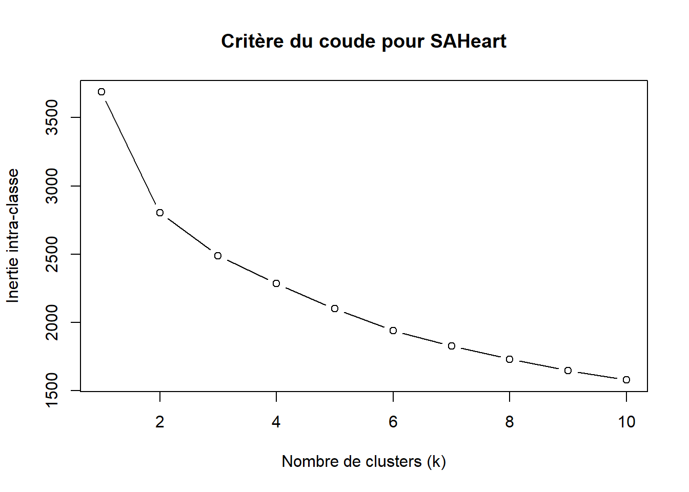
On observe un coude à k=3 donc on retient cette valeur pour notre paramètre.
groupes.km <- kmeans(sa_heart_cr, centers = 3, nstart = 20)Nous représentons maintenant les clusters créés sur le plan de l’axe1 - axe2 de l’ACP:
fviz_cluster(groupes.km, data = sa_heart_cr, ellipse.type ="convex",
xlab = "Axe␣1", ylab = "Axe␣2")+
theme_minimal()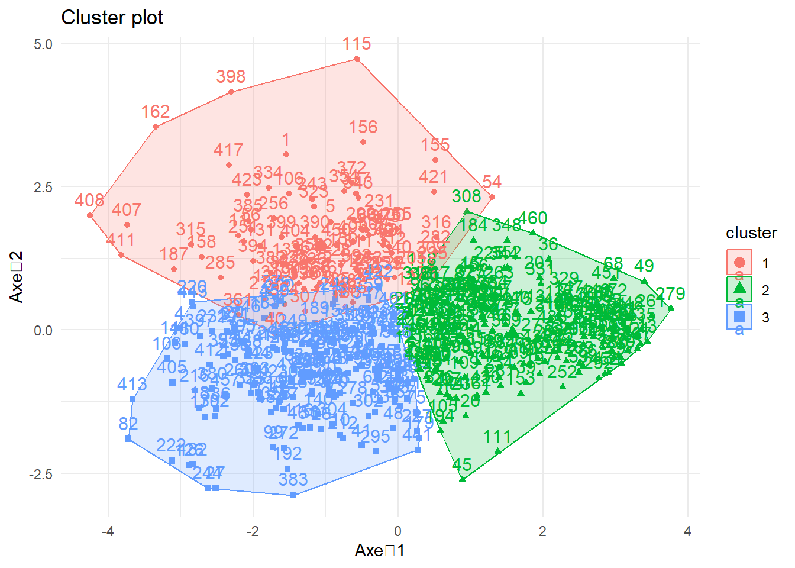
On ajoute la colonne des clusters (groupes.km$cluster) à notre jeu de données original pour pouvoir comparer.
# Ajout des clusters au dataframe d'origine
sa_heart_bilan <- sa_heart %>%
mutate(Cluster = as.factor(groupes.km$cluster))
# Tableau croisé pour la maladie (chd)
table(sa_heart_bilan$Cluster, sa_heart_bilan$chd)
No Si
1 47 50
2 160 38
3 95 72# Tableau croisé pour les antécédents (famhist)
table(sa_heart_bilan$Cluster, sa_heart_bilan$famhist)
Absent Present
1 50 47
2 141 57
3 79 88Nous allons effectuer une classification ascendante hiérarchique.
La première étape est de construire la matrice des distances avec la fonction dist:
d.sa_heart <- dist(sa_heart_cr)Ensuite on peut lancer le clustering hiérarchique avec la commande hclust() puis afficher le dendogramme:
hc.ward = hclust(dist(sa_heart_cr), method="ward.D2")
plot(hc.ward)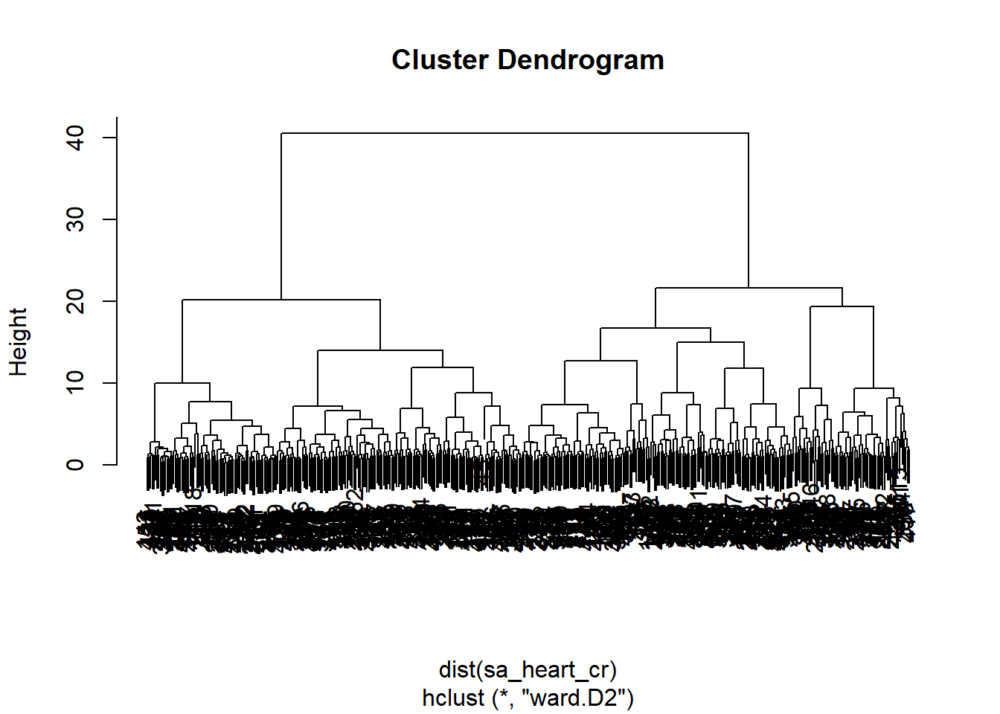
À partir du dendrogramme, on peut construire les classes en effectuant une coupe horizontale dans l’arbre et récupérer les classes ainsi définies. La commande cutree permet de préciser le nombre de clusters que l’on veut et rect.hclust() de les représenter sur le dendogramme.
Au préalable, pour nous aider à choisir le nombre de classes, nous pouvons représenter les sauts d’inertie du dendogramme selon le nombre de classes retenues.
inertie <- sort(hc.ward$height, decreasing = T)
plot(inertie[1:20], type = "s", xlab = "Nombre de classes", ylab = "Inertie")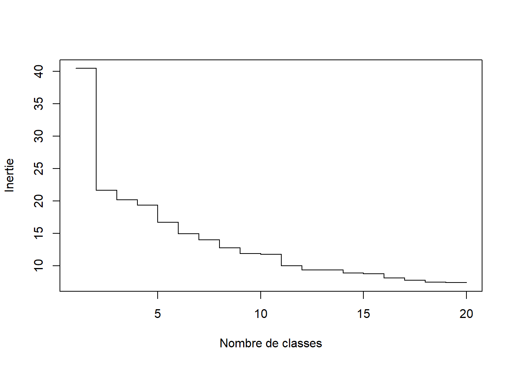
On remarque un saut très net pour k = 2, ensuite on peut aussi relever un saut pour k = 5.
clusterCAH = cutree(hc.ward,4)
plot(hc.ward)
rect.hclust(hc.ward, 2, border = "green3") # test avec 2 classes
rect.hclust(hc.ward, 5, border = "red")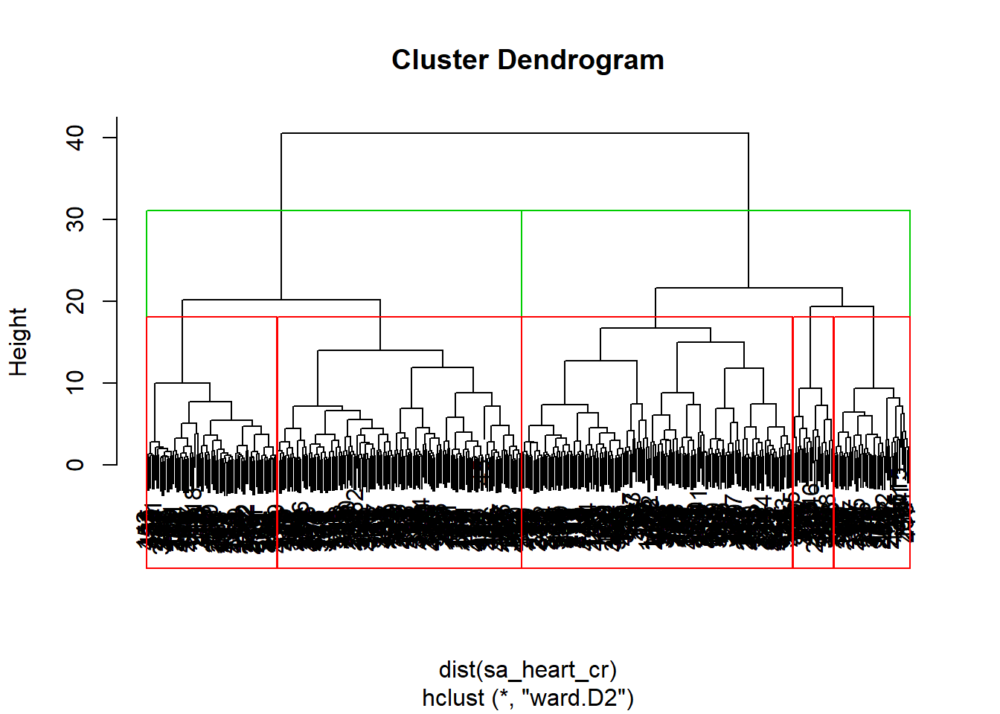
Comme pour les kmeans, on peut afficher les clusters:
fviz_cluster(list(cluster = clusterCAH, data = sa_heart_cr),
ellipse.type = "convex",
xlab = "Axe 1", ylab = "Axe 2") +
theme_minimal()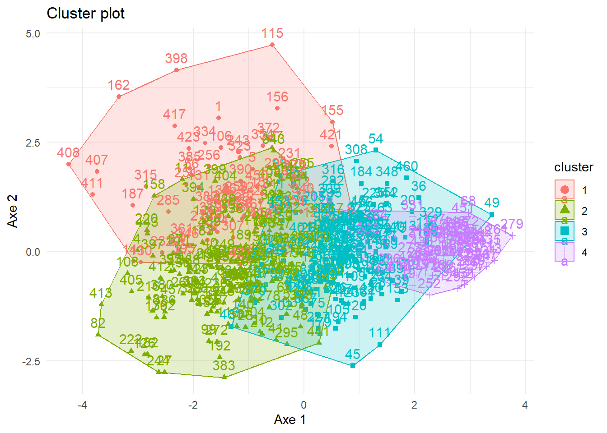
Comme pour les k-means, on croise ces nouveaux groupes avec chd et famhist.
# Comparaison avec la maladie (chd)
table(clusterCAH, sa_heart$chd)
clusterCAH No Si
1 34 37
2 83 81
3 112 36
4 73 6# Comparaison avec les antécédents (famhist)
table(clusterCAH, sa_heart$famhist)
clusterCAH Absent Present
1 37 34
2 73 91
3 100 48
4 60 19On nettoie l’environnement
rm(list=ls())Nous allons charger les données “Ozone.txt”.
ozone <- read.table("Data/ozone.txt", header = T, sep = " ", dec = ".")On effectue quelques statistiques descriptives du jeu de données:
summary(ozone) maxO3 T9 T12 T15
Min. : 42.00 Min. :11.30 Min. :14.00 Min. :14.90
1st Qu.: 70.75 1st Qu.:16.20 1st Qu.:18.60 1st Qu.:19.27
Median : 81.50 Median :17.80 Median :20.55 Median :22.05
Mean : 90.30 Mean :18.36 Mean :21.53 Mean :22.63
3rd Qu.:106.00 3rd Qu.:19.93 3rd Qu.:23.55 3rd Qu.:25.40
Max. :166.00 Max. :27.00 Max. :33.50 Max. :35.50
Ne9 Ne12 Ne15 Vx9
Min. :0.000 Min. :0.000 Min. :0.00 Min. :-7.8785
1st Qu.:3.000 1st Qu.:4.000 1st Qu.:3.00 1st Qu.:-3.2765
Median :6.000 Median :5.000 Median :5.00 Median :-0.8660
Mean :4.929 Mean :5.018 Mean :4.83 Mean :-1.2143
3rd Qu.:7.000 3rd Qu.:7.000 3rd Qu.:7.00 3rd Qu.: 0.6946
Max. :8.000 Max. :8.000 Max. :8.00 Max. : 5.1962
Vx12 Vx15 maxO3v vent
Min. :-7.878 Min. :-9.000 Min. : 42.00 Length:112
1st Qu.:-3.565 1st Qu.:-3.939 1st Qu.: 71.00 Class :character
Median :-1.879 Median :-1.550 Median : 82.50 Mode :character
Mean :-1.611 Mean :-1.691 Mean : 90.57
3rd Qu.: 0.000 3rd Qu.: 0.000 3rd Qu.:106.00
Max. : 6.578 Max. : 5.000 Max. :166.00
pluie
Length:112
Class :character
Mode :character
On remarque un écart important entre le minimum et le maximum de max03. De plus, la moyenne est supérieur à la médiane de 10, ça peut indiquer la présence de pics de pollution.
On commence avec la matrice de corrélation pour voir quelles variables influent sur l’Ozone:
# on utilise is.numeric pour garder les variables du df qui sont numériques, pour pouvoir appliquer la fonction cor
cor(ozone[, sapply(ozone, is.numeric)]) maxO3 T9 T12 T15 Ne9 Ne12
maxO3 1.0000000 0.6993865 0.7842623 0.7745700 -0.6217042 -0.6407513
T9 0.6993865 1.0000000 0.8829672 0.8464460 -0.4838636 -0.4722475
T12 0.7842623 0.8829672 1.0000000 0.9461930 -0.5842709 -0.6601002
T15 0.7745700 0.8464460 0.9461930 1.0000000 -0.5861683 -0.6492261
Ne9 -0.6217042 -0.4838636 -0.5842709 -0.5861683 1.0000000 0.7883411
Ne12 -0.6407513 -0.4722475 -0.6601002 -0.6492261 0.7883411 1.0000000
Ne15 -0.4783021 -0.3251386 -0.4580991 -0.5746817 0.5502490 0.7098668
Vx9 0.5276234 0.2506896 0.4301045 0.4530892 -0.4976361 -0.4926581
Vx12 0.4307959 0.2223857 0.3126291 0.3437506 -0.5287752 -0.5103204
Vx15 0.3918989 0.1703215 0.2706802 0.2866028 -0.4939010 -0.4322695
maxO3v 0.6845160 0.5822451 0.5636289 0.5678887 -0.2765500 -0.3619227
Ne15 Vx9 Vx12 Vx15 maxO3v
maxO3 -0.4783021 0.5276234 0.4307959 0.3918989 0.6845160
T9 -0.3251386 0.2506896 0.2223857 0.1703215 0.5822451
T12 -0.4580991 0.4301045 0.3126291 0.2706802 0.5636289
T15 -0.5746817 0.4530892 0.3437506 0.2866028 0.5678887
Ne9 0.5502490 -0.4976361 -0.5287752 -0.4939010 -0.2765500
Ne12 0.7098668 -0.4926581 -0.5103204 -0.4322695 -0.3619227
Ne15 1.0000000 -0.4014717 -0.4318633 -0.3782896 -0.3084755
Vx9 -0.4014717 1.0000000 0.7501775 0.6822608 0.3403172
Vx12 -0.4318633 0.7501775 1.0000000 0.8371720 0.2236755
Vx15 -0.3782896 0.6822608 0.8371720 1.0000000 0.1899220
maxO3v -0.3084755 0.3403172 0.2236755 0.1899220 1.0000000Pour essayer de mieux s’y retrouver dans la matrice de corrélation, on va utiliser le package ggcorrplot:
library(ggcorrplot)
corr_matrix <- cor(ozone[, sapply(ozone, is.numeric)], use = "complete.obs")
ggcorrplot(corr_matrix,
lab = TRUE, # Affiche les coefficients chiffrés sur la carte
title = "Corrélations des variables de Ozone")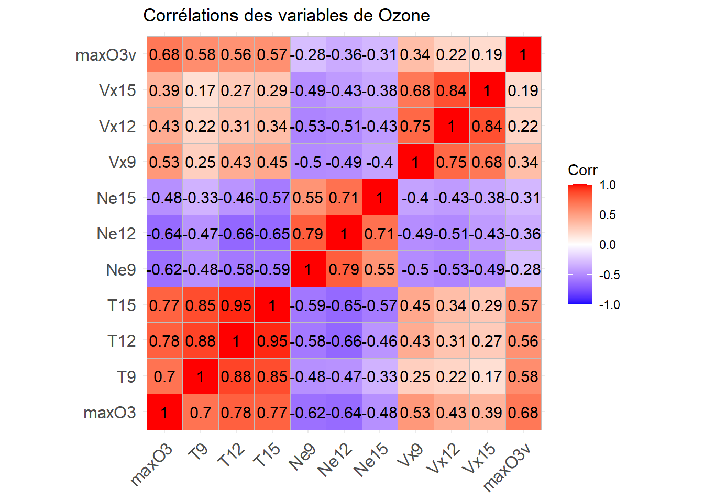
On observe ici une forte corrélation positive entre maxO3 et les températures, particulièrement T12 et T15. À l’inverse, une corrélation négative avec les variables Ne9, Ne12 ou Ne15. On retrouve également de la colinéarité: les températures entre elles (T9, T12, T15) sont très fortement corrélées
On veut étudier la relation entre la variable maxO3 et T15 (la température à 15h). Pour cela on va effectuer une régression linéaire simple pour expliquer la concentration en ozone en fonction de cette température.
Le modèle utilisé est de la forme \(maxO3 = \beta_0 + \beta_1 \cdot T15 + \epsilon\). On utilise la fonction lm() pour estimer les paramètres.
# Réalisation de la régression linéaire simple
rl_simple <- lm(maxO3 ~ T15, data = ozone)
# Affichage des résultats détaillés
summary(rl_simple)
Call:
lm(formula = maxO3 ~ T15, data = ozone)
Residuals:
Min 1Q Median 3Q Max
-34.13 -13.93 0.40 12.57 50.04
Coefficients:
Estimate Std. Error t value Pr(>|t|)
(Intercept) -18.7331 8.6562 -2.164 0.0326 *
T15 4.8187 0.3752 12.844 <2e-16 ***
---
Signif. codes: 0 '***' 0.001 '**' 0.01 '*' 0.05 '.' 0.1 ' ' 1
Residual standard error: 17.91 on 110 degrees of freedom
Multiple R-squared: 0.6, Adjusted R-squared: 0.5963
F-statistic: 165 on 1 and 110 DF, p-value: < 2.2e-16Le coefficicient \(\beta_0 = -18.73\) est la valeur théorique de l’ozone si la température était de 0°C. Le coefficient de \(\beta_1 = 4.82\) indique l’augmentation moyenne de la concentration d’ozone pour chaque degré supplémentaire à 15h. Le coefficient est positif, cela confirme que la chaleur favorise la pollution.
Le R² indique la part de la variabilité de l’ozone expliquée par la température. On a R² = 0.6 donc T15 semble être un bon prédicteur.
On réalise le graphique représentant le nuage de points (T15, maxO3) et la régression linéaire:
ggplot(ozone, aes(x = T15, y = maxO3)) +
geom_point() + # Nuage de points
geom_smooth(method = "lm", color = "red") + # Droite de régression
labs(title = "Lien entre Température (15h) et Ozone",
x = "Température à 15h (T15)",
y = "Concentration max en Ozone (maxO3)") +
theme_minimal()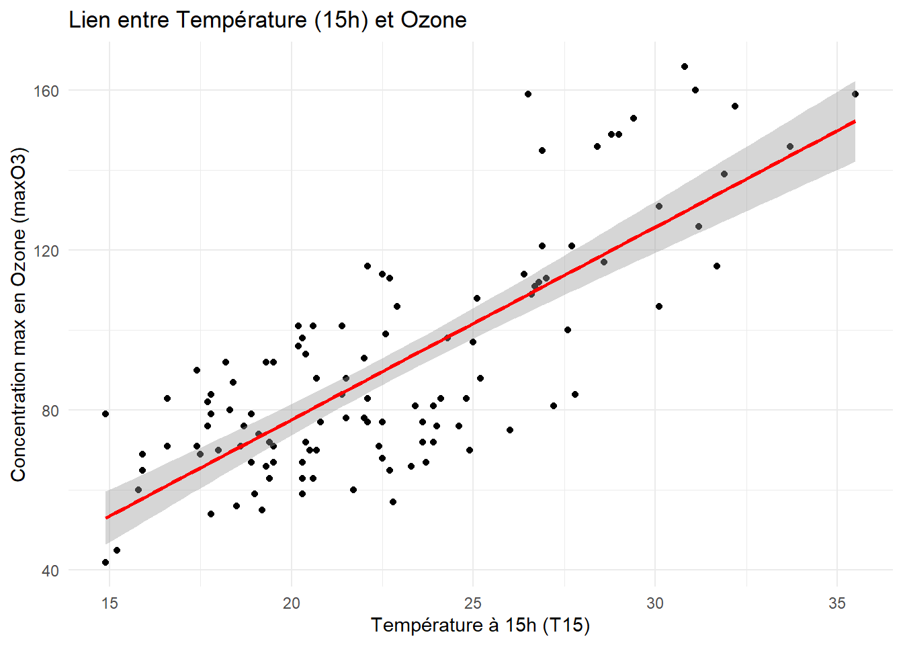
On veut à présent effectuer une régression linéaire multiple.
Pour construire ce modèle on va sélectionner les variables suivantes:
On ne garde que une variable pour chaque type (une température, une nébulosité, un vent) car on a vu que \(T9\), \(T12\) et \(T15\) sont très corrélées entre elles et donc les inclure n’apporterait pas beaucoup de nouvelles infos au modèle et peut même le destabiliser. C’est aussi car on souhaite respecter le principe de parcimonie: expliquer le maximum de variance avec le minimum de variables possible et donc simplifier le modèle.
De plus on a gardé les variables avec de milieu de journée, car on pense que c’est à ce moment là que les pics de formation d’ozone sont formés.
On effectue donc notre régression multiple:
# Modèle de régression linéaire multiple
rl_multiple <- lm(maxO3 ~ T15 + Ne12 + maxO3v + Vx15, data = ozone)
# Affichage du résumé statistique
summary(rl_multiple)
Call:
lm(formula = maxO3 ~ T15 + Ne12 + maxO3v + Vx15, data = ozone)
Residuals:
Min 1Q Median 3Q Max
-56.798 -8.662 0.642 8.115 41.358
Coefficients:
Estimate Std. Error t value Pr(>|t|)
(Intercept) 13.77678 12.34229 1.116 0.26683
T15 2.56632 0.46129 5.563 1.97e-07 ***
Ne12 -2.34626 0.85941 -2.730 0.00741 **
maxO3v 0.35691 0.06035 5.914 4.06e-08 ***
Vx15 1.23941 0.55431 2.236 0.02743 *
---
Signif. codes: 0 '***' 0.001 '**' 0.01 '*' 0.05 '.' 0.1 ' ' 1
Residual standard error: 14.79 on 107 degrees of freedom
Multiple R-squared: 0.7347, Adjusted R-squared: 0.7248
F-statistic: 74.09 on 4 and 107 DF, p-value: < 2.2e-16Le coefficient de détermination \(R^2\) est d’environ 0,735. Cela signifie que notre modèle explique 73,5 % de la variabilité de max03, ce qui est une nette amélioration par rapport au modèle simple (qui tournait autour de 60 %)
T15 et maxO3v ont des p-values très faibles (\(< 0,001\)), ce qui confirme leur impact majeur et hautement significatif sur max03. Ne12 a un coefficient négatif (environ -2,35), confirmant que plus le ciel est couvert à midi, plus la concentration d’ozone diminue. Vx15 est également significatif (\(p < 0,05\)), montrant que la composante du vent à 15h influence les niveaux de pollution enregistrés.
Ce modèle multiple est bien plus robuste pour la prédiction que le modèle simple car il intègre la synergie entre la température, l’ensoleillement et la persistance temporelle de la pollution.
Nettoyage de l’environnement:
rm(list=ls())On commence par charger les données:
adclick <- read.csv("Data/AdClick.csv", header = TRUE, sep = ",")Ensuite on effectue quelques statistiques descriptives pour explorer les données, mais avant on va passer en facteur les variables qui ne doivent pas être lues comme numériques:
adclick$Click <- as.factor(adclick$Click)
adclick$Gender <- as.factor(adclick$Gender)Maintenant on peut s’intéresser à un summary de notre jeu de données:
summary(adclick) User.ID Gender Age EstimatedSalary Click
Min. :15566689 Female:204 Min. :18.00 Min. : 15000 0:257
1st Qu.:15626764 Male :196 1st Qu.:29.75 1st Qu.: 43000 1:143
Median :15694342 Median :37.00 Median : 70000
Mean :15691540 Mean :37.66 Mean : 69743
3rd Qu.:15750363 3rd Qu.:46.00 3rd Qu.: 88000
Max. :15815236 Max. :60.00 Max. :150000 Ensuite on veut regarder si l’une de nos variables, à l’air d’avoir une influence sur le fait de cliquer ou non.
ggplot(adclick, aes(x = Click, y = Age, fill = Click)) +
geom_boxplot() +
labs(title = "Distribution de l'Âge selon le Clic", x = "0=Non, 1=Oui") +
theme_minimal()
Ce boxplot de l’âge montre que le groupe Click = 1 est nettement plus âgé que le groupe Click = 0. Les utilisateurs qui cliquent sur la publicité sont sensiblement plus âgés que ceux qui ne cliquent pas.
De la même manière on regarde pour le salaire:
ggplot(adclick, aes(x = Click, y = EstimatedSalary, fill = Click)) +
geom_boxplot() +
labs(title = "Distribution du Salaire selon le Clic", y = "Salaire Estimé") +
theme_minimal()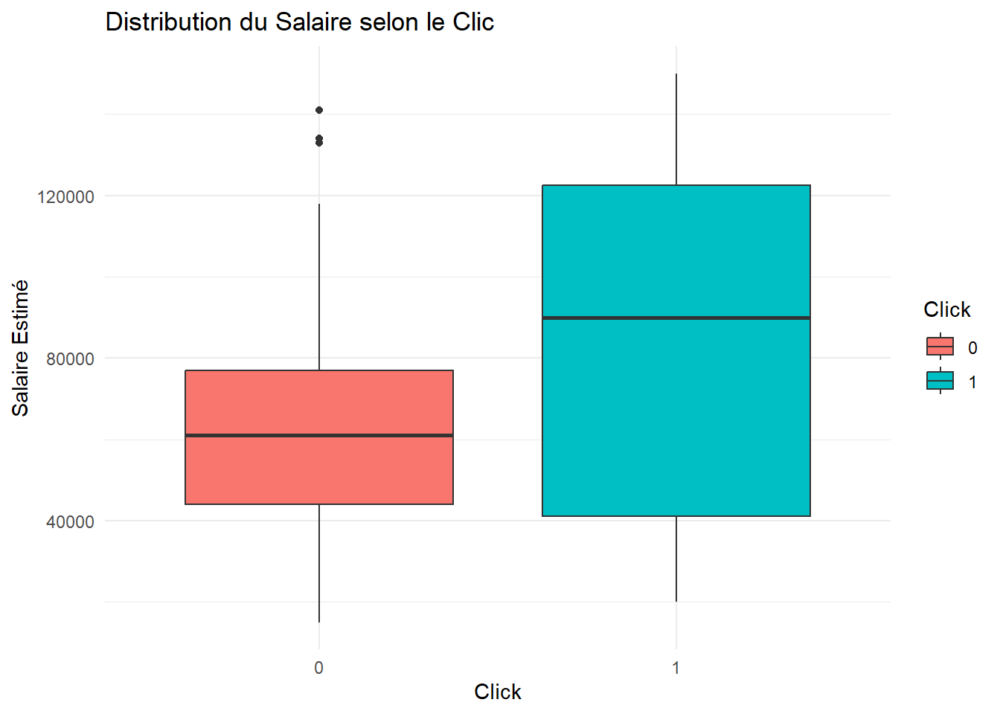
On remarque un net décalage vers le haut pour le groupe qui ont cliqué. La médiane et l’ensemble de la boîte sont situées plus haut que pour le groupe 0. Les personnes avec un salaire plus élevé ont plus tendance à s’intéresser à la publicité.
ggplot(adclick, aes(x = Gender, fill = Click)) +
geom_bar(position = "fill") + # "fill" pour voir les pourcentages
labs(title = "Proportion de Clics par Genre", y = "Fréquence") +
theme_minimal()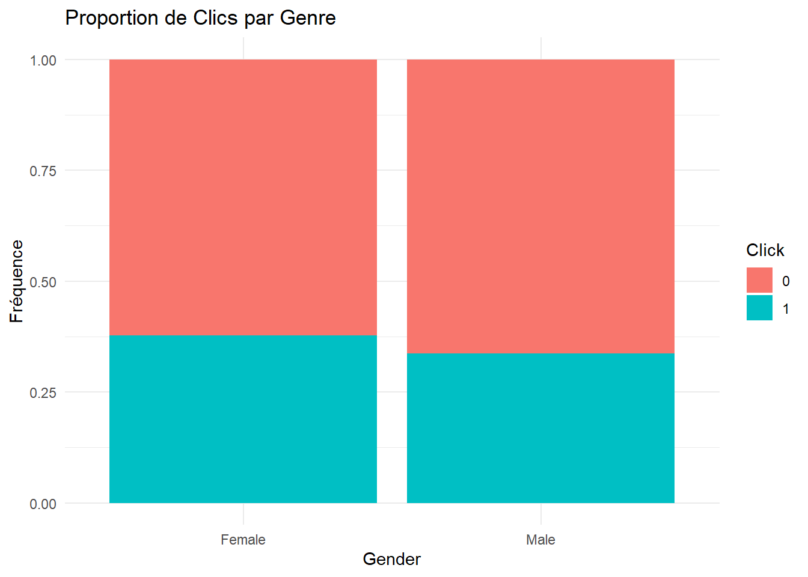
Les proportions de clics entre les hommes et les femmes sont assez proches, le genre ne semble pas influencer fortement le clic.
Nous allons maintenant effectuer une régression logistique pour modéliser la probabilité de cliquer sur la publicité en fonction de l’âge, du salaire et du genre.
On utilise la fonction glm() avec l’argument family = binomial pour spécifier que la variable réponse suit une loi binomiale avec 0 ou 1.
# ici on réalise le modèle
reg_log <- glm(Click ~ Age + EstimatedSalary + Gender,
data = adclick,
family = binomial)
# puis on affiche les résultats
summary(reg_log)
Call:
glm(formula = Click ~ Age + EstimatedSalary + Gender, family = binomial,
data = adclick)
Coefficients:
Estimate Std. Error z value Pr(>|z|)
(Intercept) -1.278e+01 1.359e+00 -9.405 < 2e-16 ***
Age 2.370e-01 2.638e-02 8.984 < 2e-16 ***
EstimatedSalary 3.644e-05 5.473e-06 6.659 2.77e-11 ***
GenderMale 3.338e-01 3.052e-01 1.094 0.274
---
Signif. codes: 0 '***' 0.001 '**' 0.01 '*' 0.05 '.' 0.1 ' ' 1
(Dispersion parameter for binomial family taken to be 1)
Null deviance: 521.57 on 399 degrees of freedom
Residual deviance: 275.84 on 396 degrees of freedom
AIC: 283.84
Number of Fisher Scoring iterations: 6L’intercept est très négatif, ce qui signifie que par défaut (âge 0, salaire 0), la probabilité de cliquer est quasi nulle. L’age, le coefficient est \(0.237 > 0\) et très significatif car \(p < 0.001\). Cela confirme notre analyse exploratoire : plus on est âgé, plus la probabilité de cliquer augmente. Le Salaire: le coefficient est aussi positif et significatif. Un salaire élevé augmente les chances de clic. Le Genre: le coefficient = 0.33 n’est pas significatif car \(p = 0.274 > 0.05\). Cela signifie que le genre n’a pas d’impact réel sur la décision de cliquer une fois qu’on connaît l’âge et le salaire. On pourrait envisager de retirer cette variable pour simplifier le modèle.
Nous allons maintenant observer les erreurs de classifications grâce à une table croisant le clic prédit et le clic effectif Pour ça on calcule la prédiction des probabilités:
prev<-predict(reg_log, type="response")Quand la proba est > 0.5 alors clic = 1 ; sinon clic = 0
prev<-as.numeric(prev>0.5)Et maintenant on peut regarder le tableau de fréquence des prédictions 0/1 et l’accuracy de notre modèle:
# precision globale
mean(prev==adclick$Click)[1] 0.8525table(prev,adclick$Click)
prev 0 1
0 237 39
1 20 104Il y a 20 faux positifs (prédits cliqueurs à tort) et 39 faux négatifs (cliqueurs ratés). Le modèle est performant avec 85% de bonnes prédictions.
On souhaite construire un arbre de classification, pour cela on doit charger les librairies :
library(rpart)
library(rpart.plot)Ensuite on peut construire notre arbre avec rpart:
arbre <- rpart(Click~.,data=adclick,cp=0.02)La librairie rpart.plot permet de résumer l’information de l’arbre et de le représenter graphiquement :
rpart.plot(arbre,main="Représentation de l’arbre")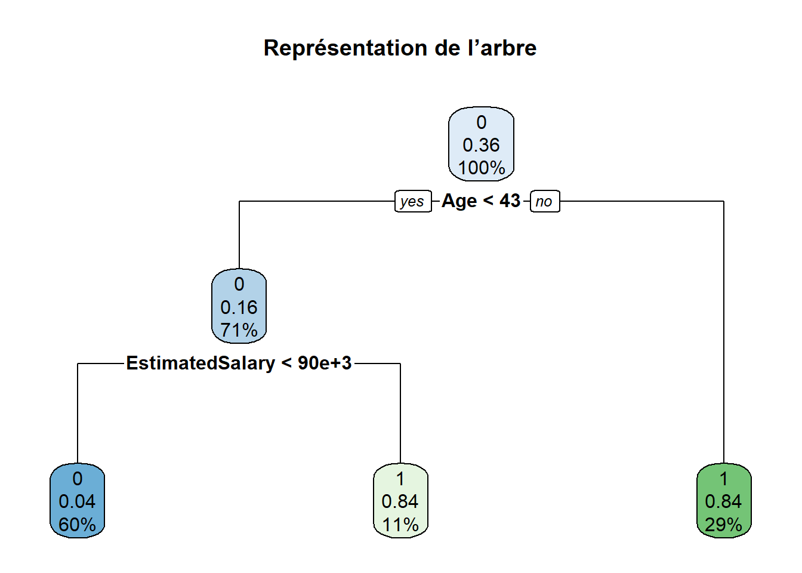
Regardons les prédictions et la performance de notre arbre :
# Prédictions sous forme de probabilités
pred_arbre<-predict(arbre,data=adclick)
# Prédictions sous forme de variable binaire
pred_arbre_cl<-predict(arbre,data=adclick,type="class")
# Comparaison avec les "vraies" valeurs de Y
table(pred_arbre_cl, adclick$Click)
pred_arbre_cl 0 1
0 232 9
1 25 134# Taux de bonnes prédictions
mean(pred_arbre_cl==adclick$Click)[1] 0.915L’arbre de classification se révèle être le modèle le plus performant pour ce problème. Avec une précision supérieure à 90%, il surpasse la régression logistique.
Pour cet exercice nous choisissons le jeu de données Breast Cancer Wisconsin (Diagnostic).
Ce jeu de données provient de UCI Machine Learning Repository, qui est une archive de l’Université de Californie à Irvine, elle centralise tout un tas de jeux de données de divers domaines.
La variable à prédire est nommée Diagnosis. Elle est qualitative et comporte deux modalités:
Pour chaque observation, 30 variables numériques sont disponibles. Elles correspondent à la moyenne, l’écart-type et la valeur maximale, de 10 mesures de la tumeur.
On commence par nettoyer notre environnement:
rm(list=ls())Nous pouvons maintenant charger nos données:
url <- "https://archive.ics.uci.edu/ml/machine-learning-databases/breast-cancer-wisconsin/wdbc.data"
df <- read.csv(url, header = FALSE, sep = ",")Pour se faciliter la suite de notre travail, nous allons renommer les colonnes du dataset:
colnames(df) <- c(
"ID", "Diagnostic",
# Les 10 Moyennes
"Rayon_Moy", "Texture_Moy", "Perimetre_Moy", "Aire_Moy", "Lisse_Moy",
"Compacite_Moy", "Concavite_Moy", "Pts_Concaves_Moy", "Symetrie_Moy", "Dim_Fractale_Moy",
# Les 10 Erreurs Standards (SE)
"Rayon_SE", "Texture_SE", "Perimetre_SE", "Aire_SE", "Lisse_SE",
"Compacite_SE", "Concavite_SE", "Pts_Concaves_SE", "Symetrie_SE", "Dim_Fractale_SE",
# Les 10 Pires valeurs (Worst)
"Rayon_Pire", "Texture_Pire", "Perimetre_Pire", "Aire_Pire", "Lisse_Pire",
"Compacite_Pire", "Concavite_Pire", "Pts_Concaves_Pire", "Symetrie_Pire", "Dim_Fractale_Pire"
)
df$Diagnostic <- as.factor(df$Diagnostic)Nous allons maintenant analyser les varaibles explicatives de notre data frame.
Nous utilisons la fonction summary pour obtenir un aperçu rapide:
summary(df) ID Diagnostic Rayon_Moy Texture_Moy
Min. : 8670 B:357 Min. : 6.981 Min. : 9.71
1st Qu.: 869218 M:212 1st Qu.:11.700 1st Qu.:16.17
Median : 906024 Median :13.370 Median :18.84
Mean : 30371831 Mean :14.127 Mean :19.29
3rd Qu.: 8813129 3rd Qu.:15.780 3rd Qu.:21.80
Max. :911320502 Max. :28.110 Max. :39.28
Perimetre_Moy Aire_Moy Lisse_Moy Compacite_Moy
Min. : 43.79 Min. : 143.5 Min. :0.05263 Min. :0.01938
1st Qu.: 75.17 1st Qu.: 420.3 1st Qu.:0.08637 1st Qu.:0.06492
Median : 86.24 Median : 551.1 Median :0.09587 Median :0.09263
Mean : 91.97 Mean : 654.9 Mean :0.09636 Mean :0.10434
3rd Qu.:104.10 3rd Qu.: 782.7 3rd Qu.:0.10530 3rd Qu.:0.13040
Max. :188.50 Max. :2501.0 Max. :0.16340 Max. :0.34540
Concavite_Moy Pts_Concaves_Moy Symetrie_Moy Dim_Fractale_Moy
Min. :0.00000 Min. :0.00000 Min. :0.1060 Min. :0.04996
1st Qu.:0.02956 1st Qu.:0.02031 1st Qu.:0.1619 1st Qu.:0.05770
Median :0.06154 Median :0.03350 Median :0.1792 Median :0.06154
Mean :0.08880 Mean :0.04892 Mean :0.1812 Mean :0.06280
3rd Qu.:0.13070 3rd Qu.:0.07400 3rd Qu.:0.1957 3rd Qu.:0.06612
Max. :0.42680 Max. :0.20120 Max. :0.3040 Max. :0.09744
Rayon_SE Texture_SE Perimetre_SE Aire_SE
Min. :0.1115 Min. :0.3602 Min. : 0.757 Min. : 6.802
1st Qu.:0.2324 1st Qu.:0.8339 1st Qu.: 1.606 1st Qu.: 17.850
Median :0.3242 Median :1.1080 Median : 2.287 Median : 24.530
Mean :0.4052 Mean :1.2169 Mean : 2.866 Mean : 40.337
3rd Qu.:0.4789 3rd Qu.:1.4740 3rd Qu.: 3.357 3rd Qu.: 45.190
Max. :2.8730 Max. :4.8850 Max. :21.980 Max. :542.200
Lisse_SE Compacite_SE Concavite_SE Pts_Concaves_SE
Min. :0.001713 Min. :0.002252 Min. :0.00000 Min. :0.000000
1st Qu.:0.005169 1st Qu.:0.013080 1st Qu.:0.01509 1st Qu.:0.007638
Median :0.006380 Median :0.020450 Median :0.02589 Median :0.010930
Mean :0.007041 Mean :0.025478 Mean :0.03189 Mean :0.011796
3rd Qu.:0.008146 3rd Qu.:0.032450 3rd Qu.:0.04205 3rd Qu.:0.014710
Max. :0.031130 Max. :0.135400 Max. :0.39600 Max. :0.052790
Symetrie_SE Dim_Fractale_SE Rayon_Pire Texture_Pire
Min. :0.007882 Min. :0.0008948 Min. : 7.93 Min. :12.02
1st Qu.:0.015160 1st Qu.:0.0022480 1st Qu.:13.01 1st Qu.:21.08
Median :0.018730 Median :0.0031870 Median :14.97 Median :25.41
Mean :0.020542 Mean :0.0037949 Mean :16.27 Mean :25.68
3rd Qu.:0.023480 3rd Qu.:0.0045580 3rd Qu.:18.79 3rd Qu.:29.72
Max. :0.078950 Max. :0.0298400 Max. :36.04 Max. :49.54
Perimetre_Pire Aire_Pire Lisse_Pire Compacite_Pire
Min. : 50.41 Min. : 185.2 Min. :0.07117 Min. :0.02729
1st Qu.: 84.11 1st Qu.: 515.3 1st Qu.:0.11660 1st Qu.:0.14720
Median : 97.66 Median : 686.5 Median :0.13130 Median :0.21190
Mean :107.26 Mean : 880.6 Mean :0.13237 Mean :0.25427
3rd Qu.:125.40 3rd Qu.:1084.0 3rd Qu.:0.14600 3rd Qu.:0.33910
Max. :251.20 Max. :4254.0 Max. :0.22260 Max. :1.05800
Concavite_Pire Pts_Concaves_Pire Symetrie_Pire Dim_Fractale_Pire
Min. :0.0000 Min. :0.00000 Min. :0.1565 Min. :0.05504
1st Qu.:0.1145 1st Qu.:0.06493 1st Qu.:0.2504 1st Qu.:0.07146
Median :0.2267 Median :0.09993 Median :0.2822 Median :0.08004
Mean :0.2722 Mean :0.11461 Mean :0.2901 Mean :0.08395
3rd Qu.:0.3829 3rd Qu.:0.16140 3rd Qu.:0.3179 3rd Qu.:0.09208
Max. :1.2520 Max. :0.29100 Max. :0.6638 Max. :0.20750 On peut voir que le jeu de données contient 569 observations. On compte 357 cas bénins et 212 cas malins.
On remarque des disparités d’échelles, notamment entre: L’Aire_Moy qui varie de 143,5 à 2501,0 (moyenne à 654,9) et la Lisse_Moy qui varie de 0,052 à 0,163 (moyenne à 0,096).
De plus, on va supprimer la variable ID qui n’a pas d’intérêt:
df$ID <- NULLOn s’intéresse maintenant à la corrélation entre les variables:
Nous avons scindé l’analyse des corrélations en trois volets pour conserver la lisibilité des coefficients.
library(ggcorrplot)
# Matrice des Moyennes
p1 <- ggcorrplot(cor(df[, 2:11]),
type = "lower", lab = TRUE,
title = "Corrélations : Variables Moyennes")
# Matrice des Erreurs Standard
p2 <- ggcorrplot(cor(df[, 12:21]),
type = "lower", lab = TRUE,
title = "Corrélations des écarts types")
# Matrice des "Pires" valeurs
p3 <- ggcorrplot(cor(df[, 22:31]),
type = "lower", lab = TRUE,
title = "Corrélations : Pires valeurs")
# Affichage des 3 graphiques l'un après l'autre
p1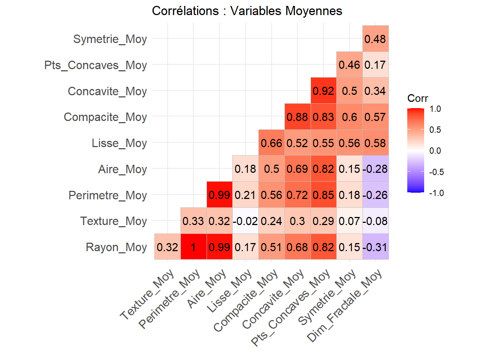
p2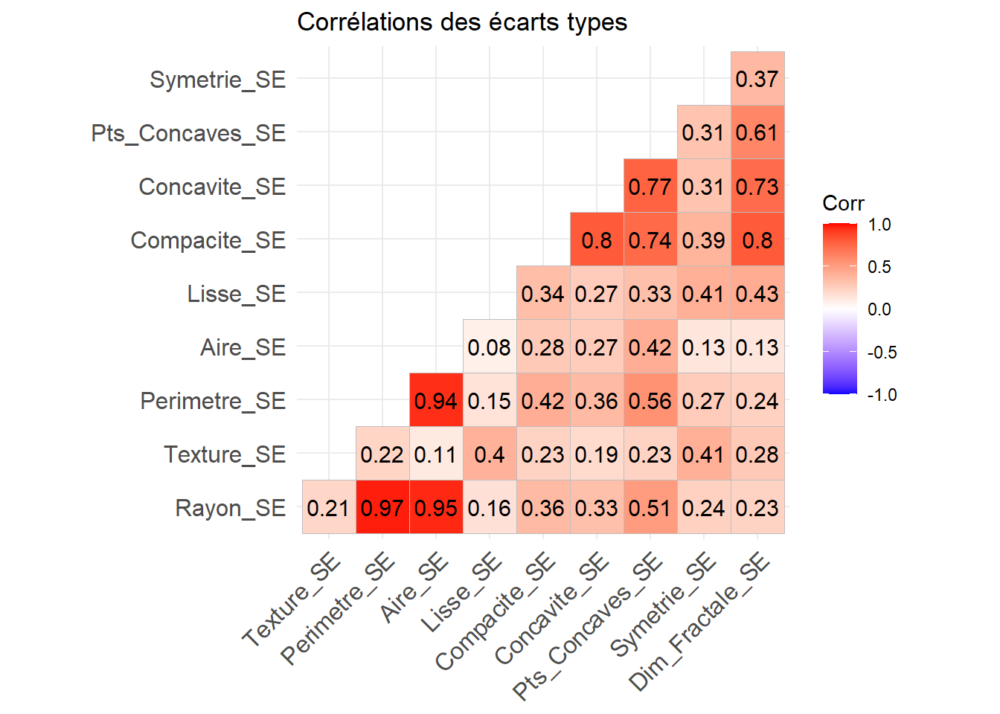
p3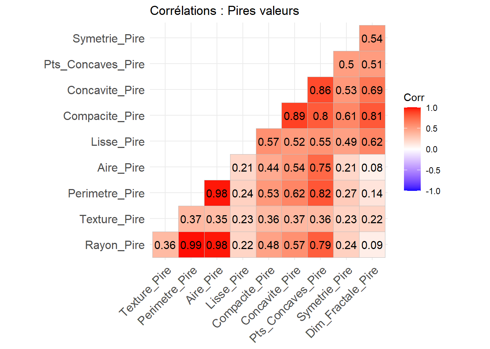
On peut voir que la forte colinéarité entre les variables de taille (Rayon, Périmètre, Aire) est systémique et se retrouve à l’identique dans les trois groupes de mesures.
On observe que les trois matrices sont quasi-identiques, ce qui confirme la redondance de l’information entre ces trois groupes.
De la même manière, les graphiques suivants illustrent les liens entre la variable cible et les variables explicatives, permettant de repérer visuellement les variables qui distinguent le plus nettement les tumeurs malignes des tumeurs bénignes.
library(ggplot2)
library(reshape2)
# On passe les données en format "long" pour ggplot
# On ne garde que le Diagnostic et les 10 variables moyennes
data_long <- melt(df[, 1:11], id.vars = "Diagnostic")
# Création de la grille de Boxplots
ggplot(data_long, aes(x = Diagnostic, y = value, fill = Diagnostic)) +
geom_boxplot() +
facet_wrap(~variable, scales = "free") + # "free" car les échelles sont très différentes
labs(title = "Distribution des variables moyennes selon le Diagnostic",
y = "Valeur normalisée (échelle libre)") +
theme_minimal()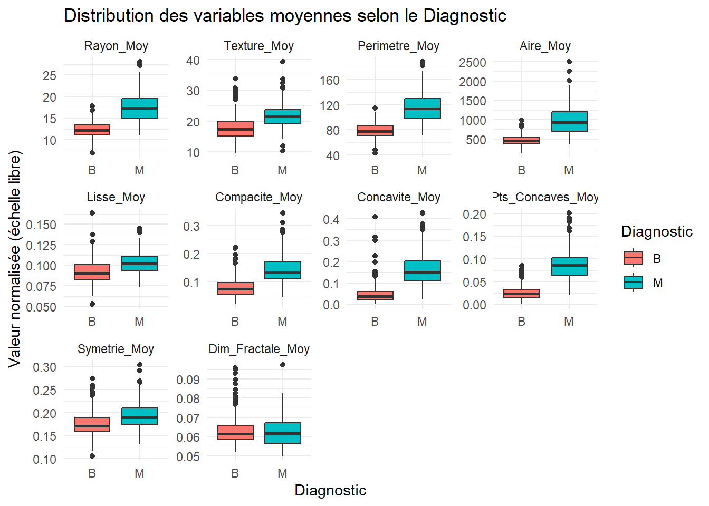
data_long_se <- melt(df[, c(1, 12:21)], id.vars = "Diagnostic")
ggplot(data_long_se, aes(x = Diagnostic, y = value, fill = Diagnostic)) +
geom_boxplot() +
facet_wrap(~variable, scales = "free") +
labs(title = "Distribution des erreurs standards (SE) selon le Diagnostic") +
theme_minimal()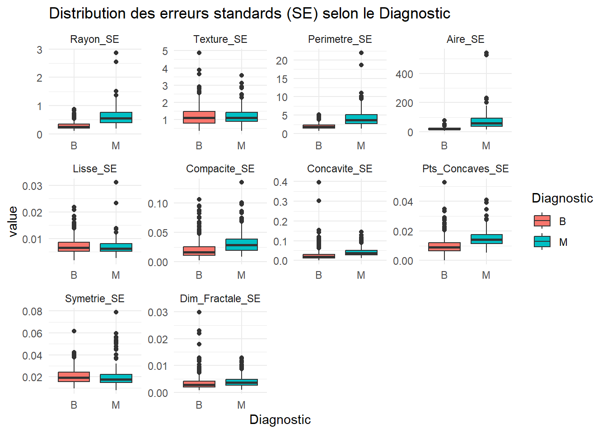
data_long_pire <- melt(df[, c(1, 22:31)], id.vars = "Diagnostic")
ggplot(data_long_pire, aes(x = Diagnostic, y = value, fill = Diagnostic)) +
geom_boxplot() +
facet_wrap(~variable, scales = "free") +
labs(title = "Distribution des pires valeurs (Pire) selon le Diagnostic") +
theme_minimal()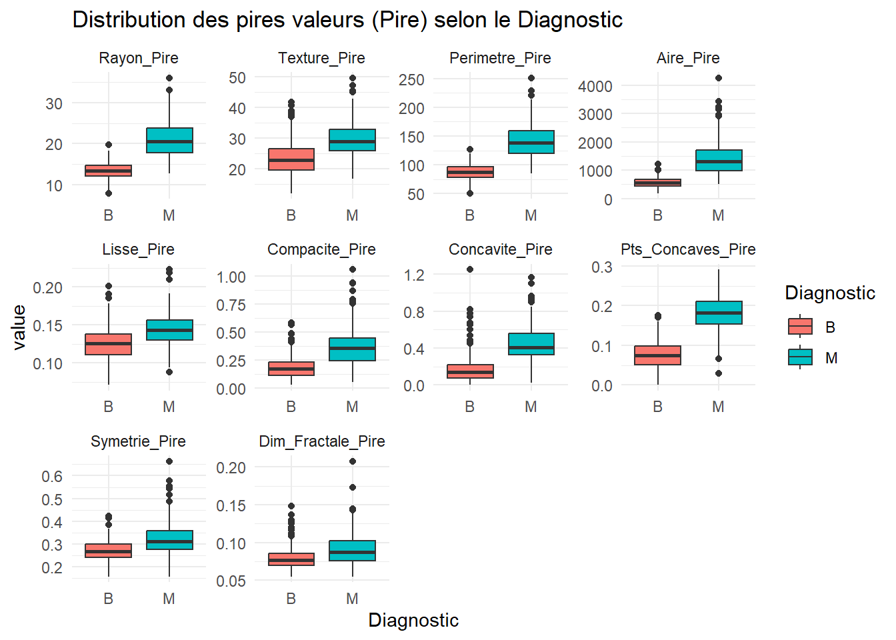
Les variables liées à la taille et à la forme (Rayon, Périmètre, Aire et surtout Points_Concaves) montrent une séparation très nette entre les classes. Les valeurs pour les tumeurs malignes (M) sont systématiquement plus élevées que pour les tumeurs bénignes (B). Ce sont nos meilleurs prédicteurs.
On observe que la capacité de séparation est quasi identique entre les graphiques des “Moyennes” et des “Pires valeurs”. Cela confirme visuellement la forte redondance (multicolinéarité) identifiée lors de l’analyse des corrélations.
Les graphiques des erreurs standards montrent des boîtes qui se chevauchent davantage. Cela indique que l’a variabilité’ecrat type est plus “bruité” et moins prédictif que la mesure elle-même.
La séparation nette des classes sur plusieurs variables nous laisse penser que les modèles de classification devraient atteindre une précision élevée.
Nous sélectionnons trois algorithmes de classifications supervisées:
Les k plus proches voisins (k-NN): Pour prédire la classe d’un individu (ici une tumeur), l’algorithme cherche les \(k\) observations les plus proches dans l’espace des variables. La prédiction (Bénigne ou Maligne) sera celle de la majorité de ses voisins. Il faudra normaliser les données pour que les variables aient le même poids sur le calcul de distance.
La forêt aléatoire : L’algorithme construit un grand nombre d’arbres de décision sur des sous-échantillons de données. La décision finale est prise par un vote majoritaire
Les machines à vecteurs de support (SVM): Le modèle cherche à tracer une frontière (un hyperlpan) qui sépare les classes avec la plus grande marge possible. Il utilise une fonction “noyau” (kernel) pour projeter les données dans un espace de plus grande dimension.
Avant d’entraîner on créé un échantillon de test de taille 20% de notre échantillon global:
library(caret)
# Découpage Train (80%) / Test (20%)
set.seed(123) # Pour la reproductibilité
# cette fonction nous assure un échantillonnage stratifié
trainIndex <- createDataPartition(df$Diagnostic, p = 0.8, list = FALSE)
train_data <- df[trainIndex, ]
test_data <- df[-trainIndex, ]On définit le protocole d’entraînement de nos modèles: Validation croisée
train_control <- trainControl(method = "cv", number = 10)Cette méthode permet d’évaluer la robustesse de nos algorithmes et de sélectionner les hyperparamètres en limitant les risques de sur-apprentissage.
Au lieu d’entraîner notre modèle une seule fois, on lui demande de répéter l’opération plusieurs fois sur des sous-parties de nos données d’entraînement.
Le paramètre à optimiser est le nombre de voisins \(k\). Nous ajoutons ici le pré-traitement center et scale pour normaliser nos données car k-NN y est très sensible.
model_knn <- train(Diagnostic ~ .,
data = train_data,
method = "knn",
trControl = train_control,
preProcess = c("center", "scale"),
tuneLength = 10) # Teste 10 valeurs de kLe paramètre mtry correspond au nombre de variables sélectionnées aléatoirement à chaque division d’un arbre.
library(randomForest)
model_rf <- train(Diagnostic ~ .,
data = train_data,
method = "rf",
trControl = train_control,
tuneLength = 5) # Teste 5 valeurs de mtryNous utilisons un noyau linéaire pour commencer, où le paramètre \(C\) contrôle la marge d’erreur.
library(kernlab)
model_svm <- train(Diagnostic ~ .,
data = train_data,
method = "svmLinear",
trControl = train_control,
preProcess = c("center", "scale"),
tuneGrid = expand.grid(C = c(0.01, 0.1, 1, 10)))Grâce à la validation croisée, caret a testé différentes configurations de paramètres pour chaque algorithme. La combinaison maximisant le taux de bonne classification (accuracy) a été automatiquement retenue comme modèle final.
Pour obtenir les résultats de nos prédictions, nous allons appliquer les modèles entraînés sur l’échantillon de test (de taille 20% et qui n’ont pas servi à l’entrainement des modèles)
pred_knn <- predict(model_knn, newdata = test_data)
pred_rf <- predict(model_rf, newdata = test_data)
pred_svm <- predict(model_svm, newdata = test_data)Maintenant on peut afficher les matrices de confusion, où l’on compare les prédictions avec les vraies valeurs:
cm_knn <- confusionMatrix(pred_knn, test_data$Diagnostic, positive = "M")
print(cm_knn)Confusion Matrix and Statistics
Reference
Prediction B M
B 71 1
M 0 41
Accuracy : 0.9912
95% CI : (0.9517, 0.9998)
No Information Rate : 0.6283
P-Value [Acc > NIR] : <2e-16
Kappa : 0.981
Mcnemar's Test P-Value : 1
Sensitivity : 0.9762
Specificity : 1.0000
Pos Pred Value : 1.0000
Neg Pred Value : 0.9861
Prevalence : 0.3717
Detection Rate : 0.3628
Detection Prevalence : 0.3628
Balanced Accuracy : 0.9881
'Positive' Class : M
On voit qu’on a un taux de bonne réponse de 99%. Le modèle a correctement classé 71 cas bénins (B) et 41 cas malins (M). Il n’y a qu’une seule erreur (1 cas malin classé en bénin).
cm_rf <- confusionMatrix(pred_rf, test_data$Diagnostic, positive = "M")
print(cm_rf)Confusion Matrix and Statistics
Reference
Prediction B M
B 69 0
M 2 42
Accuracy : 0.9823
95% CI : (0.9375, 0.9978)
No Information Rate : 0.6283
P-Value [Acc > NIR] : <2e-16
Kappa : 0.9625
Mcnemar's Test P-Value : 0.4795
Sensitivity : 1.0000
Specificity : 0.9718
Pos Pred Value : 0.9545
Neg Pred Value : 1.0000
Prevalence : 0.3717
Detection Rate : 0.3717
Detection Prevalence : 0.3894
Balanced Accuracy : 0.9859
'Positive' Class : M
Le modèle de Forêt Aléatoire affiche une précision globale de 98,23 %. Bien que légèrement inférieure à celle du k-NN, cette méthode s’avère médicalement plus performante dans ce test car contrairement au k-NN, la Forêt Aléatoire n’a généré aucun faux négatif, garantissant qu’aucune tumeur cancéreuse n’a été ignorée, au prix de seulement deux faux positifs
cm_svm <- confusionMatrix(pred_svm, test_data$Diagnostic, positive = "M")
print(cm_svm)Confusion Matrix and Statistics
Reference
Prediction B M
B 69 0
M 2 42
Accuracy : 0.9823
95% CI : (0.9375, 0.9978)
No Information Rate : 0.6283
P-Value [Acc > NIR] : <2e-16
Kappa : 0.9625
Mcnemar's Test P-Value : 0.4795
Sensitivity : 1.0000
Specificity : 0.9718
Pos Pred Value : 0.9545
Neg Pred Value : 1.0000
Prevalence : 0.3717
Detection Rate : 0.3717
Detection Prevalence : 0.3894
Balanced Accuracy : 0.9859
'Positive' Class : M
Bien que le k-NN affiche la précision globale la plus élevée (99,12 %), nous recommandons l’utilisation de la Forêt Aléatoire ou du SVM pour ce problème de diagnostic. En effet, ces deux modèles privilégient la sensibilité (100 %), garantissant ainsi qu’aucun cas malin ne reste non diagnostiqué.